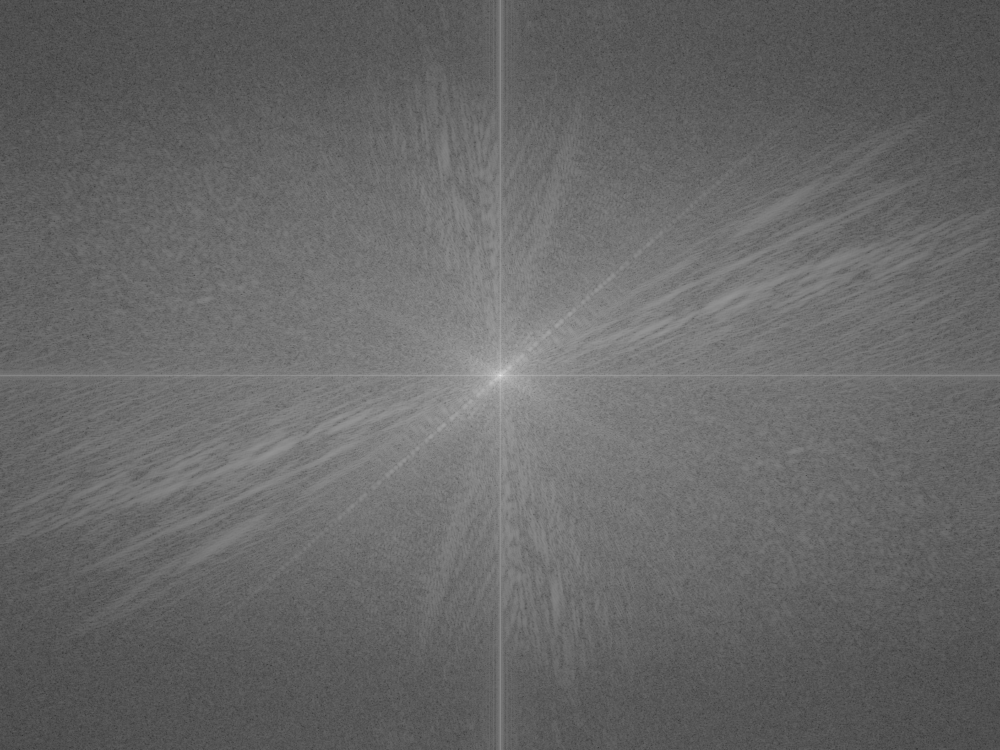
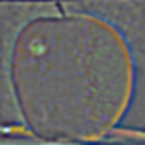
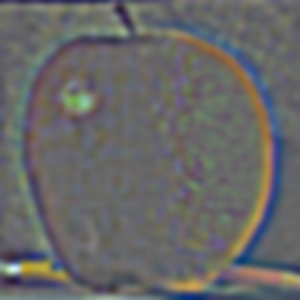

Fun with Filters and Frequencies!
This project adopts various skills to play with images. Including Gaussian Blurring, differencing, binarize, sharpening, stacking, and blending the images..
P1: Fun With Filters
3 in total
Part one
1.1
- In this section I implemented the function of convolution from scratch. First, I implemented it using four for loops, which the outer two loops traversing every pixel in the target image, and inner two loops focusing on traversing the filter to multiply filter with target image. In the two for loops version, I just simply relaced the inner two for loops with the np.sum function. Also, I padded the boundary with zeros to make sure the size of img after convolustion doesn't change. Here are the results of to kinds of implementation of convolution, which are exactly the same. I applied the box filter of 9*9 to my selfies, and here are the results.
selfie_four_loops.pngselfie_two_loops.png
- The code snippets are demonstrated as follows:
four_loopstwo_loops
- Then, I applied the standard scipy.signal.convolve2d function with the same box filter to my selfies, which results in exactly the same picture.
selfie_sci.png
- The runtime result shown below reveals that four_loops > two_loops > libversion, which is because that four_loops uses brute force computation, while two_loops uses numpy to acclerate, and the function in scipy is the most mature and efficient one.
runtime.png
- Finally, I changed the kernel to be [1,0,-1] and its transpose to realize the outcome of difference operators.
 selfie_Dx.pngselfie_Dy.png
selfie_Dx.pngselfie_Dy.png - To sum up, except the ones that call scipy function, all other tasks can be implemented by numpy. We can implement convolution by for loops, and by using D_x and D_y as kernel, we could get the result of finite difference of picture.
Part one
1.2
- In this section I tried to binarize the cameraman images. First, I convolute the cameraman image with finite difference opterators D_x and D_y to get its partial derivative in directions of x and y. Here are the results:
cameraman_Dx.pngcameraman_Dy.png
- Then, I calcutated the square root of sum of squares of partial derivatives in each pixel, and treat it as the brightness to get the magnitude image.
cameraman_grad_mag.png
- Finally, I applies a threashold to those square root of sums to serve as a classifier. The brightness below the threashold will be flattened to zero, and above the threashold will be pulled up to 255. I found setting the threashold to be 35 cound result in a satisfied outcome. This result in a clear binarized image with reduced noise.
cameraman_binarized.png
Part one
1.3
- In this section I tried to smoothering the result of binarized image. There are two ways to implement this. The first way is to gaussian blurr the image and then partial differentiate it, resulting a denoised version.
gaussianBlurBina_two_steps.png
- The second way is to difference the gaussian kernel, and use this result to convolute the image. (I_x = I * G_x, I_y = I * G_y). By the assiciative law of convolution operation, these two operations have the same result, as demonstrated by the two pictures.
 gaussianBlurBina_one_step.png
gaussianBlurBina_one_step.png
P2: Fun With Frequencies
4 in total
Part two
2.1
- In this section I managed to sharpen the image by adding high frequencies to the image. A naive way to do this is to first extract the high frequencies out by subtracting the blurred img from the orign img, and add the result to the original image. But we can also do this by calcutate out a single kernel to convolute, resulting in the same result The single-kernel formula is [sharpen_knl = (1+alpha)*delta_knl - alpha*gaus_knl]. We can adjust the alpha to change the amount of sharpening.
taj_blurred_img.pngtaj_high_freq_img.pngtaj_unsharpMask_alpha=1.pngtaj_unsharpMask_alpha=3.png
- Then, I pick a sharp image, blur it and then try to sharpen it again. This image looks different from the original one. The original img enhances all details including noise, while this one suppresses fine details through blurring and emphasizes only stronger, larger edges.
taj_unsharpMask_multi.png
Part two
2.2
- In this section I tried to create hybird images by stacking the high frequencies of a certain pic to the low frequencies of another pic. For a low-pass filter, I used a standard 2D Gaussian filter. For a high-pass filter, I used the impulse filter minus the Gaussian filter. Firstly I showed the outcome of sample imgs. The signma for low pass filter is 4.0, for high pass filter is 7.0, and the mixing weight is 50% each.
 DerekPicture.jpg
DerekPicture.jpg nutmeg.jpglowfreq_cat_man.pnghighfreq_cat_man.pnghybrid_cat_man.png
nutmeg.jpglowfreq_cat_man.pnghighfreq_cat_man.pnghybrid_cat_man.png - The following are the visualized frequency domain for the above results.
fourier_man.pngfourier_cat.png
 fourier_lowfreq.pngfourier_highfreq.pngfourier_hybrid.png
fourier_lowfreq.pngfourier_highfreq.pngfourier_hybrid.png - This is my own test set. The signma for low pass filter is 3.0, for high pass filter is 4.0, and the mixing weight is 60% for low freq and 40% for high freq.
female.pngmale.pnghybrid_male_female.png
- The following are the result from another set of pictures.
Avril.pngTaylor.pnghybrid_avril_taylor.png
Part one
2.3 & 2.4
- In this section I tried to create a laplacian stack of pictures and a gaussian stack of a mask. By multiplying and summing them together, I got a blended picture.

 The successfully blended picture is shown below:
The successfully blended picture is shown below: - Here is an additional example:


- Here, I applied the irregular mask to reproduce the result in the paper: